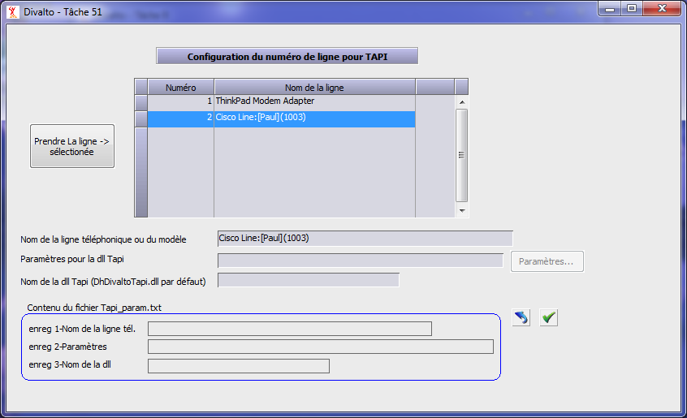
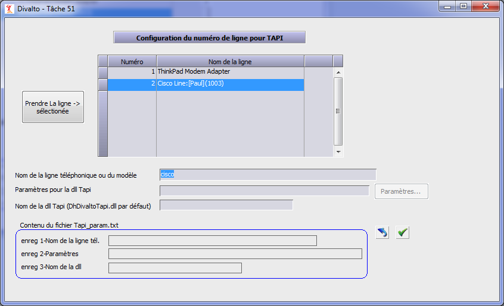
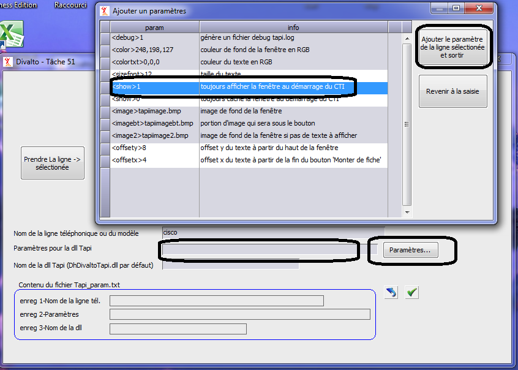
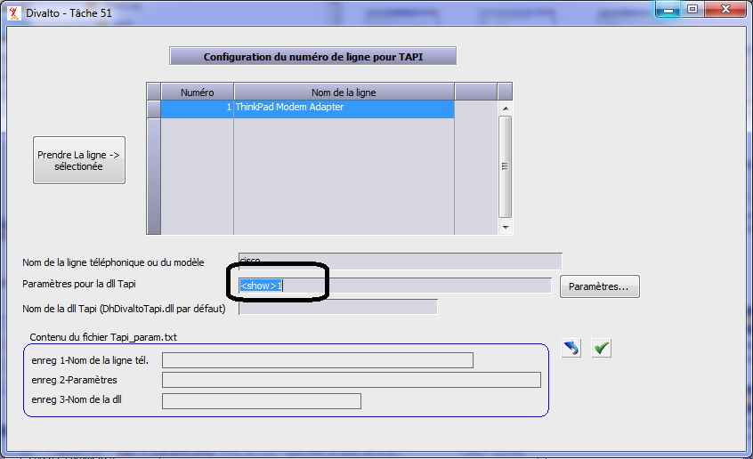

L’installation standard de Harmony (à partir de la version 6.3, cd 103a) installe les modules Tapi de Divalto.
Après l’installation de Harmony, lancez le choix « Paramétrage : Paramètres CTI » du menu Harmony.dhop :
Indiquez au CTI de Divalto qu’il doit utiliser l’interface TAPI :

Paramétrage de la ligne TAPI :
Paramétrage Global et paramétrage Local.
Le connecteur gère deux niveaux de paramétrage : un niveau général, qu'on utilisera lorsque les mêmes paramètres sont partagés par plusieurs postes de travail et un niveau local, prioritaire sur le niveau général, qu'on utilisera pour configurer un poste en particulier :
Paramétrage global.
Les paramètres globaux sont recherchés dans le fichier x:\Divalto\Sys\tapi_param.txt.
La première ligne du fichier spécifie le modèle du nom de la ligne téléphonique (par défaut, le connecteur prendra la dernière ligne de type téléphonie - voir paragraphe "Nom de la ligne téléphonique" ci-dessous).
La deuxième ligne spécifie les paramètres à fournir à la dll Tapi (au format hmp) (pas de paramètres par défaut).
La troisième ligne spécifie le nom de la dll Tapi à utiliser (par défaut, le module YCTI charge DhDivaltoTapi.dll).
Paramétrage local.
Les paramètres locaux doivent être indiqués dans la boîte de dialogue "Configuration du numéro de ligne pour TAPI". Pour l'afficher, cliquez sur le bouton "Configuration pour TAPI".
Les informations saisies ici sont locales à l’utilisateur (elles sont enregistrées dans le chapitre HKEY_CURRENT_USER de la base de registre) et sont prioritaires sur les informations contenues par le fichier tapi_param.txt.
Cas particulier des paramètres à destination de la dll Tapi : les paramètres globaux contenus par le fichier tapi_param.txt sont envoyés en premier, les paramètres locaux sont envoyés ensuite. On peut donc spécifier à la fois des paramètres globaux valables pour tous les utilisateurs et leur ajouter des paramètres spécifiques à un utilisateur particulier.
Nom de la ligne téléphonique.
Pour préciser la ligne de téléphonie à utiliser sur le poste, sélectionnez la ligne voulue dans la liste puis cliquez sur le bouton "Prendre la ligne sélectionnée" :


Remarque : Spécifier le nom de ligne n’est pas obligatoire car par défaut le connecteur prendra la dernière ligne de type téléphonie (chaque driver indique s’il est de type téléphonie ou de type modem).
Paramètres à fournir à la dll Tapi.
On peut indiquer des paramètres à envoyer au connecteur Divalto pour TAPI.
Remarque : Dans le fichier x:\Divalto\Sys\tapi_param.txt, ces paramètres sont au format Hmp.
Ces paramètres concernent essentiellement les attributs d’affichage de la fenêtre d’informations comme la couleur de fond, la couleur, la taille et la position du texte, les images de fond (dans le fichier tapi_param.txt, on peut indiquer qu’on ne veut pas d’image de fond en mettant <image>null).
Exemple :


Nom de la dll Tapi.
Spécifiez ici le nom de la dll TAPI à utiliser (par défaut, le module YCTI charge DhDivaltoTapi.dll).
Autres paramétrages :
Configuration de la montée de fiche (bouton "Configuration pour la montée de fiche") :

Pour la montée de fiche, il existe deux méthodes de traitement dépendant de l'application :
Si l'application gère elle-même quand il faut monter la fiche, sélectionnez le bouton "Laisser l'application gérer ce paramètre".
Remarque : La montée de fiche de l'application Divalto est dans de cas.
Sinon, sélectionnez le bouton correspondant à l'événement choisi pour monter la fiche (à la sonnerie, au décroché, à la demande du CTI si l'interface l'autorise -par exemple, l'interface Alsatel ne le permet pas-).
Ajout automatique d’un préfixe lors de la composition d’un appel (bouton "Configuration d'un préfixe pour sortir") :